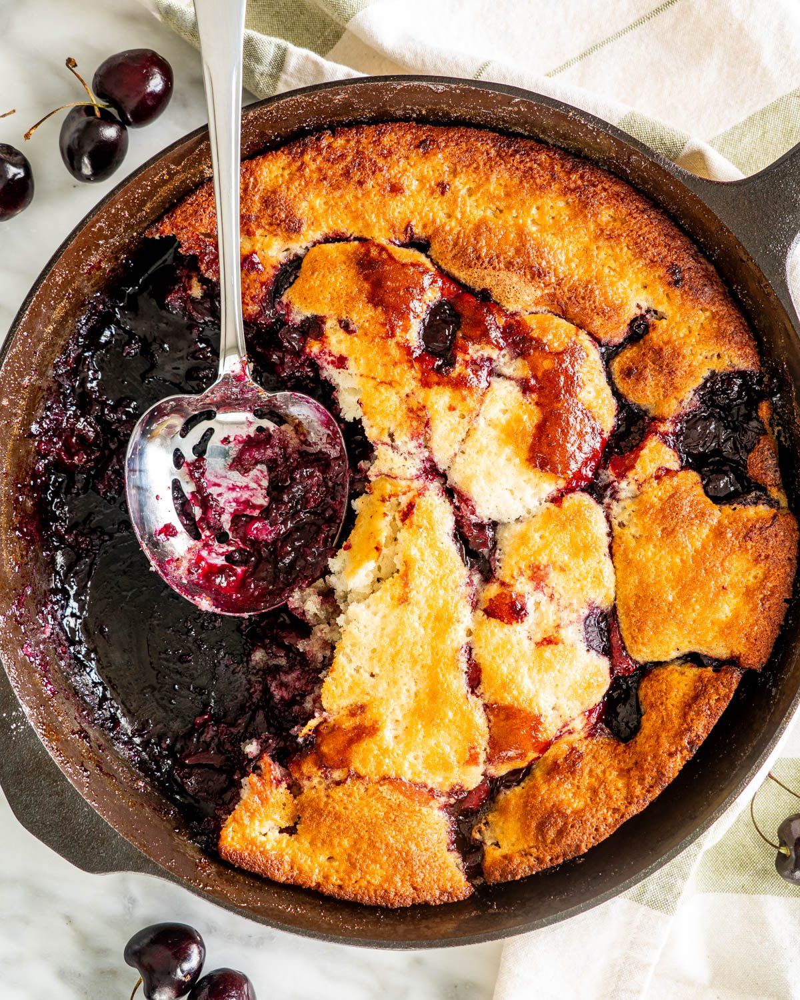

Cherry Cobbler

Sweet Cherry Cobbler
A sweet treat paired well with cider
Ingredients
Cherry filling
- 2 pounds cherries (fresh, pitted and cut in half)
- 1/2 cup sugar (granulated)
- 2 tablespoon cornstarch
- 2 tablespoon lemon juice
- 1/8 teaspoon salt
Batter
- 1 cup all purpose flour
- 1 cup sugar
- 1 tablespoon baking powder
- 1/4 teaspoon salt
- 1 egg
- 3/4 cup milk
- 1/2 cup butter (unsalted, melted, for the skillet)
Steps
- Preheat the oven to 425 degrees F.
- Cook the cherry filling: Wash and pit your cherries. This process is much faster and easier with a cherry pitter. Slice them in half and add them to a saucepan with the rest of the filling ingredients. Cook them over medium heat for about 5 minutes, stirring occasionally.
- Make the batter: Mix the flour, sugar, baking powder, salt, egg, and milk in a bowl until smooth. Melt the butter in the skillet, remove from heat, then pour the batter in.
- Bake: Spoon the cherry mixture in an even layer over the batter and turn the oven down to 350F. Bake for 40 to 45 minutes, or until golden brown.